Day 26｜德州志工、手寫明信片、被在乎的感覺
2026 年 6 月 15 日 · Portomarín → Ligonde · 16.5km
昨晚下了一場大雨，本來有點擔心，結果老天給了超美好的清晨！今天行程超佛心，從 Portomarín 到 Ligonde 只有短短 16.5 公里。為什麼刻意走這麼短？因為今晚要去朝聖之路上最後一個自由捐贈的庇護所！放慢腳步，好好享受難得的悠閒吧！
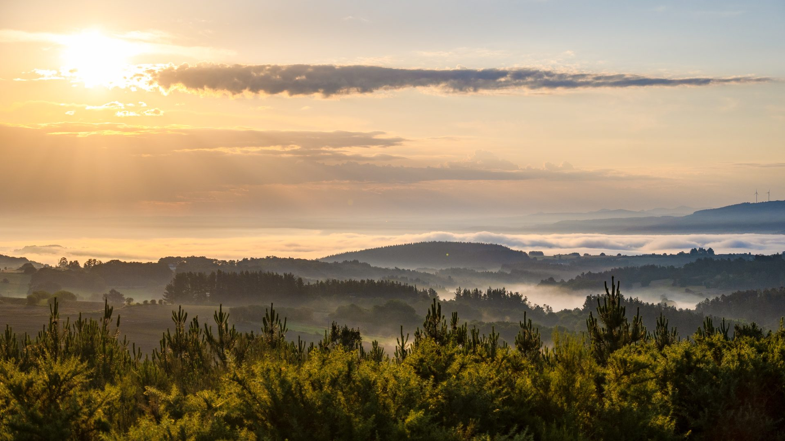
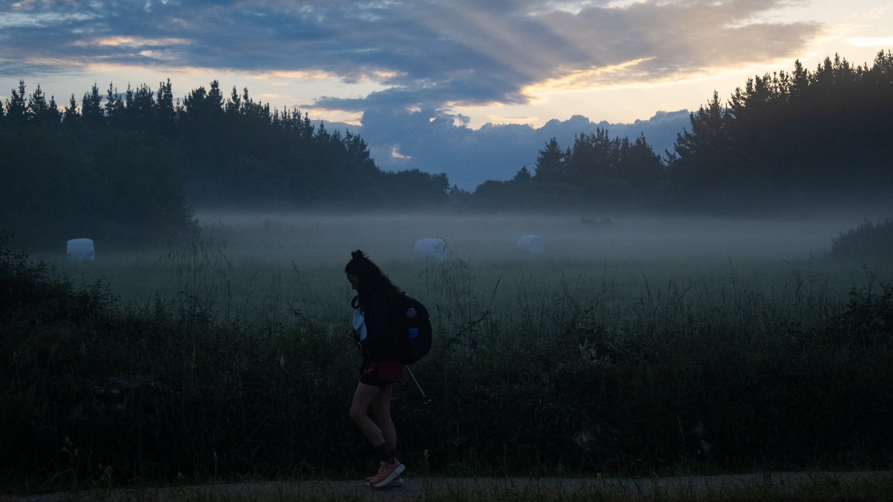
一路上看過很多帶狗的朝聖者，但這對夥伴讓我停下了腳步：狗狗只剩前腳能動，後腿靠著輪椅撐著。不知道他們走了多遠，只看見牠停下、主人就停下，牠往前、主人就陪著走。朝聖之路上終點在哪也許不重要，最珍貴的是這不離不棄的陪伴。
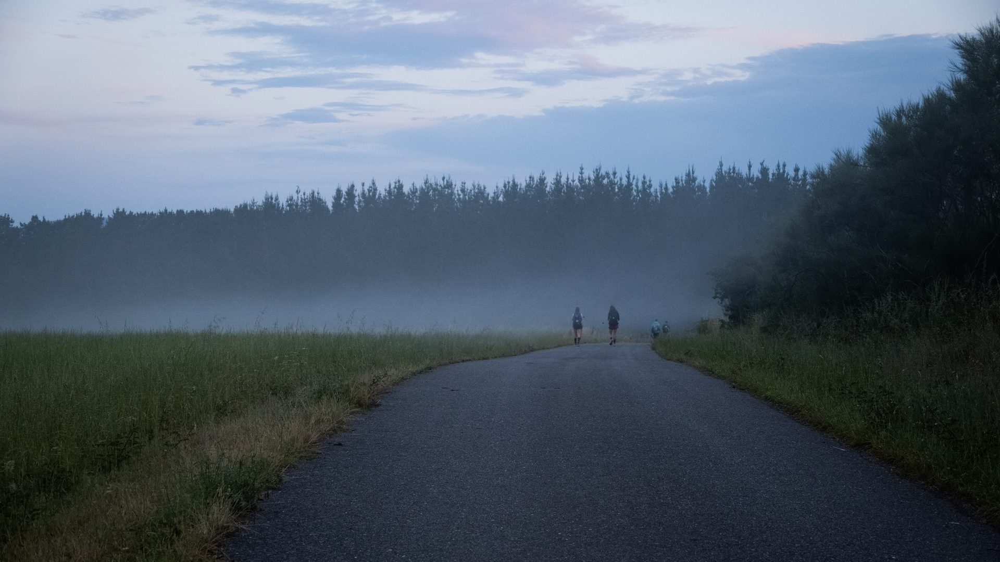
走著走著，前方出現熟悉的背影，原來是鐵十字架前遇過的韓國女孩！朝聖之路就是這樣，有緣的人總會在這條路上不斷重逢。
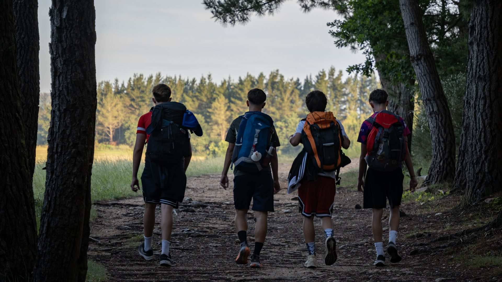
放慢腳步果然遇到美好驚喜：這裡的印章不是用蓋的，而是手工一筆一筆畫上去的，絕對是整趟朝聖之路最獨一無二的紀念！
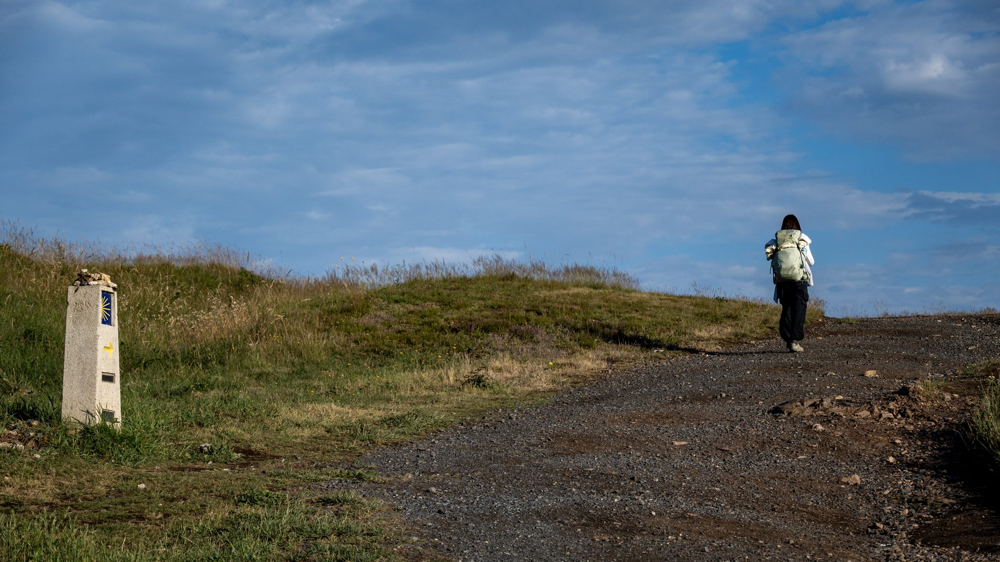
轉角處，展開雙臂歡迎每一個朝聖者的地方，就是我們今晚要入住的自由捐贈庇護所。為了這份特別的溫暖刻意走短一點，搶下只有 7 個床位的其中之一，真的非常值得！
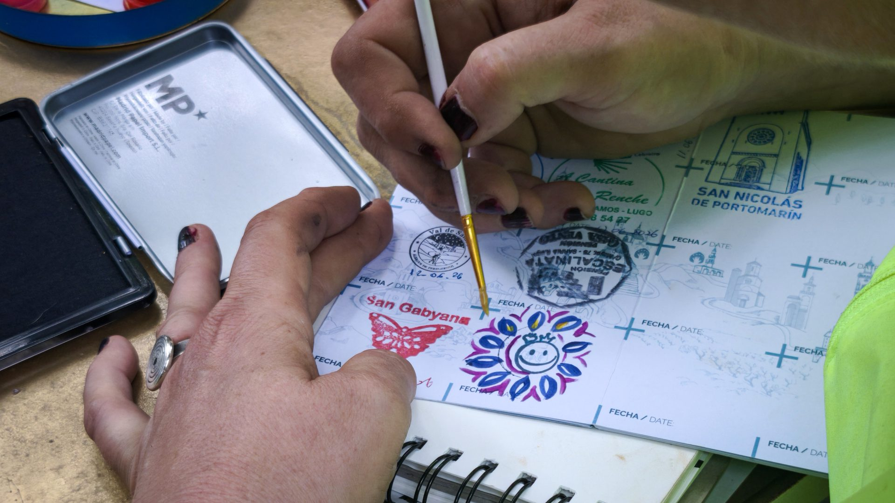
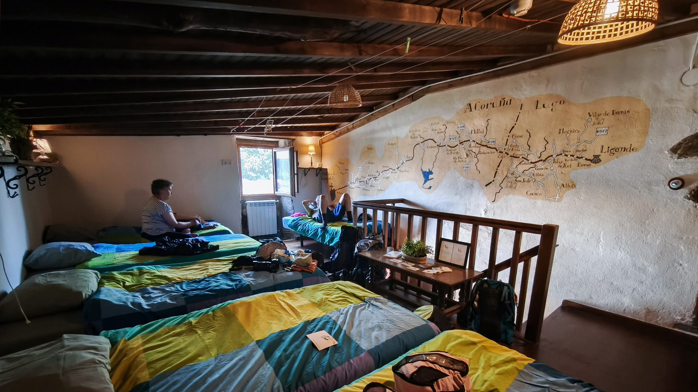
木牌上的話很可愛：「如果你心懷感恩，就敲響這個鈴吧！」能來到這間充滿人情味的庇護所，心裡只有滿滿感謝——毫不猶豫搖響鈴鐺，用鈴聲告訴他們：是的，我們來了！
臨時 cue 這群德州志工跳舞，沒想到不到 10 分鐘就學會了！他們根本天生的舞者，節奏感跟熱情都滿分！
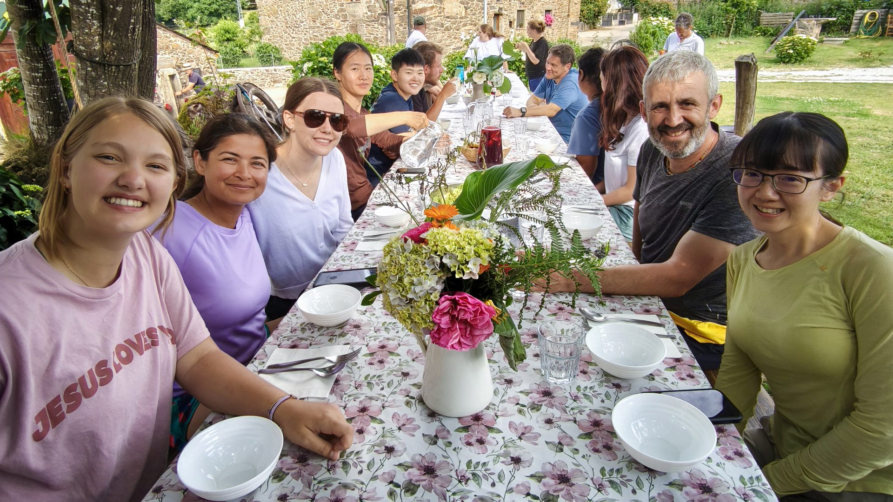
這裡的志工真的太有愛了！為了大家的衛生，會把背包收進箱子做徹底消毒，消完毒還直接幫你把重得要命的背包提上樓！這份不求回報的熱心服務，真的會讓人感動到想哭！
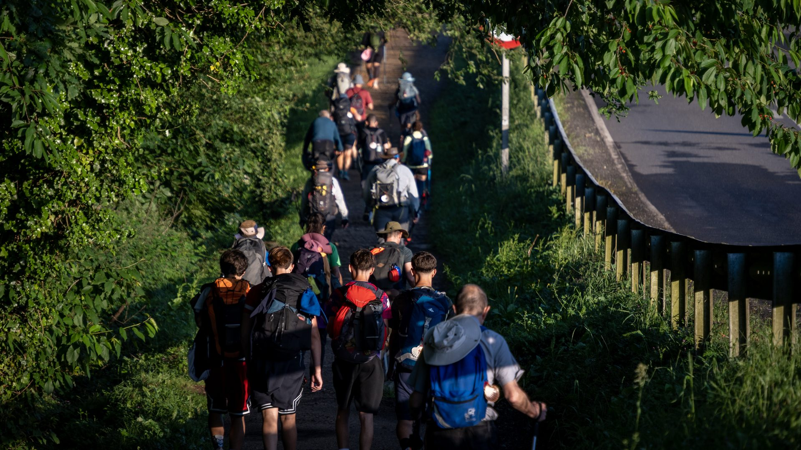
登登，終於入住！溫馨的木造閣樓裡只有 7 個床位，能幸運成為這七分之一，真的太幸福了。
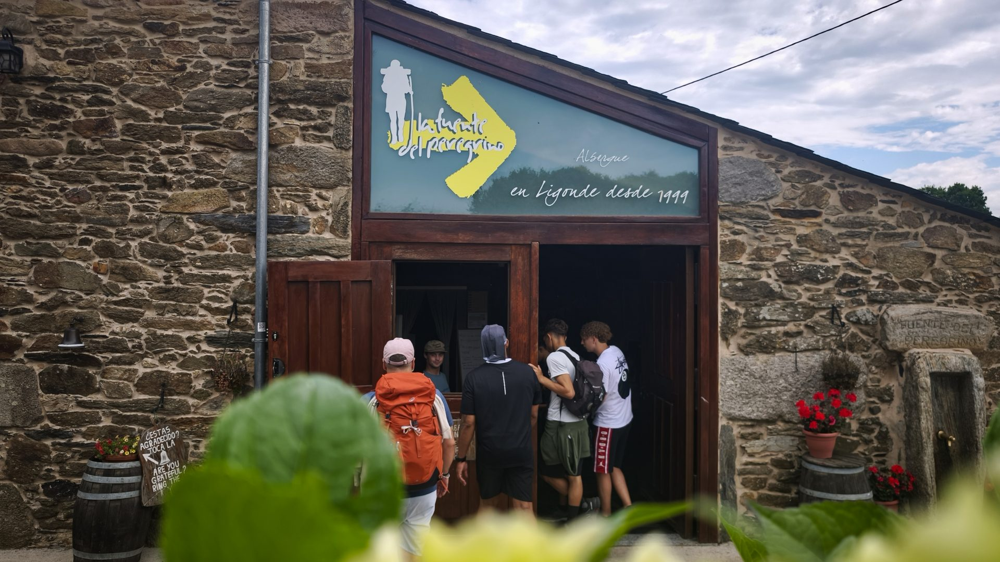
靜靜聽著大哥彈唱，簡單的旋律在石頭屋裡迴盪，成了我最享受、最放鬆的一刻。
晚餐時間，大家圍坐在花園的長桌旁，享用志工用心準備的義大利麵和紅酒。來自世界各地的朝聖者此刻像家人一樣聊著天——這份純粹的分享與溫暖，就是自由捐贈庇護所最迷人的地方。
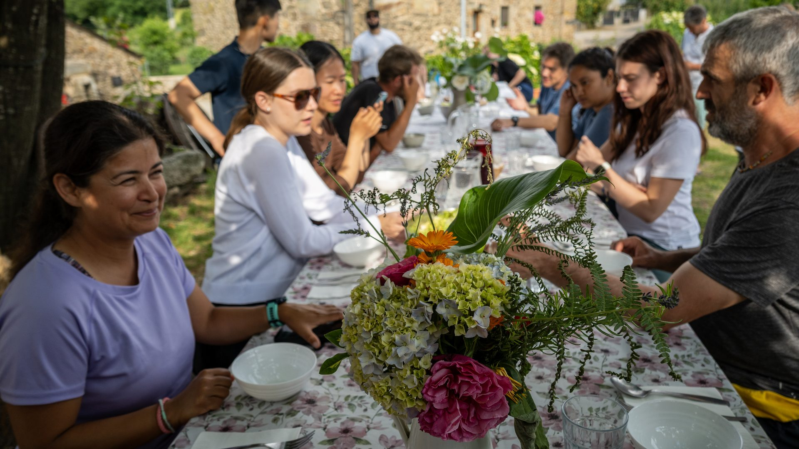
晚餐後的點心時間，每人挑一張最代表心境的照片。我選了這張「雨中舞者」——無論遇到什麼狀況，好好享受當下就對了。
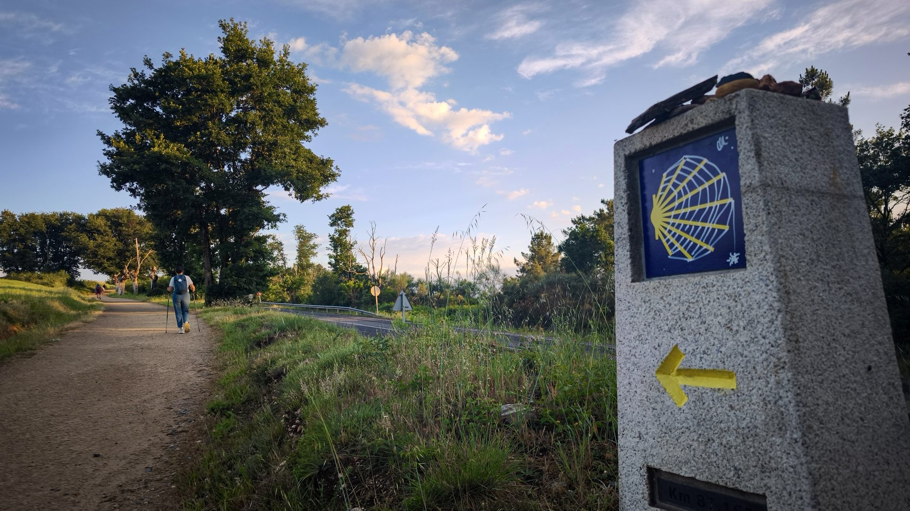
📚 朝聖者小百科：Ligonde
利貢德（Ligonde）是 Sarria 之後幾乎沒有存在感的小村，但它的安靜正是最後 100 公里最需要的。過了 100km 石碑後朝聖者暴增，這種只有少數人停留的小村反而成了真正的庇護所——而這裡的自由捐贈庇護所，是整條法國之路上最後一個，全靠志工的愛撐起來。
自由捐贈（Donativo）不是免費，而是「隨心付費」：住宿、晚餐、早餐都由志工打理，你投入多少，下一位朝聖者就承接多少。這份信任鏈走了上千年，比任何五星床位都珍貴。
✉️ 手寫卡片和手繪印章，比任何紀念品都珍貴
🙏 遇到志工時，一句真心的 Gracias 就是最好的回報
🥾 16.5km 佛系短程日，為了 7 個床位早到早休息
| 早餐啤酒 | €2.6 |
| 中餐：章魚＋牛排（分攤） | €18.0 |
| 酒吧：桑格麗×3＋啤酒×1 | €12.0 |
| 禮品：小杯子×2＋戒指 | €65.0 |
| 住宿 | €10.0 |
| 超商 | €8.0 |
| 合計 | €110.6 |
🎬 對應 Vlog EP7｜最後 100 公里：Samos → Santiago 五天全紀錄